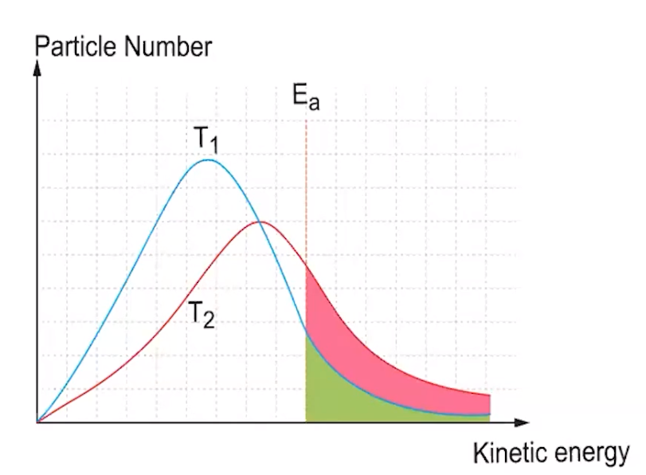
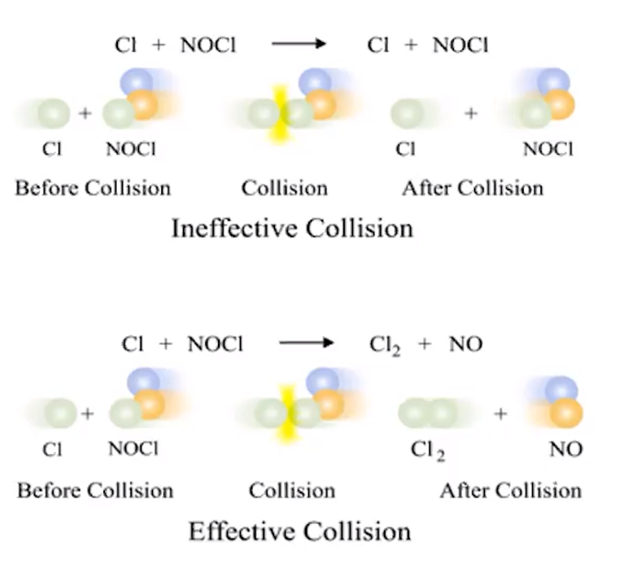

Only a small fraction of collisions lead to reactions
Successful collisions:
Have sufficient energy to overcome energy barriers
Orientations that allow bonds to in a correct manner
Maxwell-Boltzmann distributions can be used to estimate:
Fraction of collisions that have enough energy to lead to a reaction
How the fraction behaves based on temperature
{width="4.739583333333333in" height="3.4791666666666665in"}
{width="5.354166666666667in" height="4.8125in"}
Therefore
Increasing the temperature increases average energy of particles, which increases the amount of high-energy collisions => successful reactions occur more often
<!-- -->